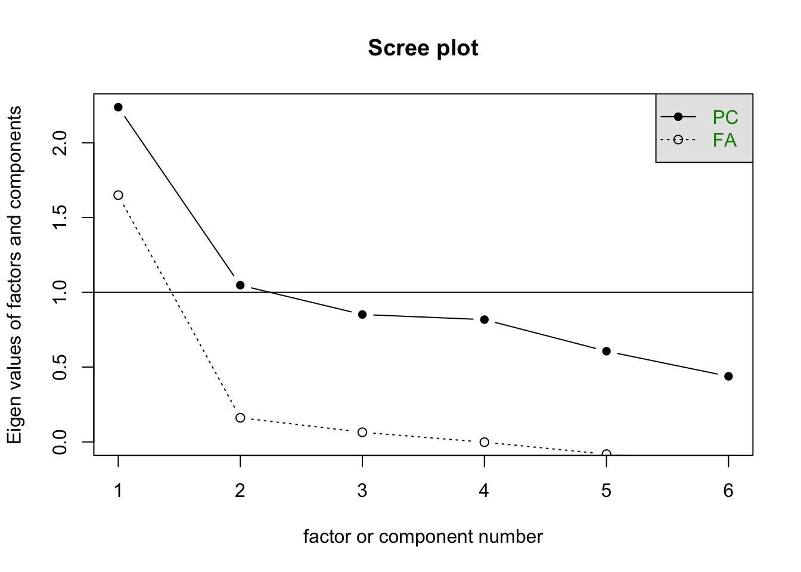
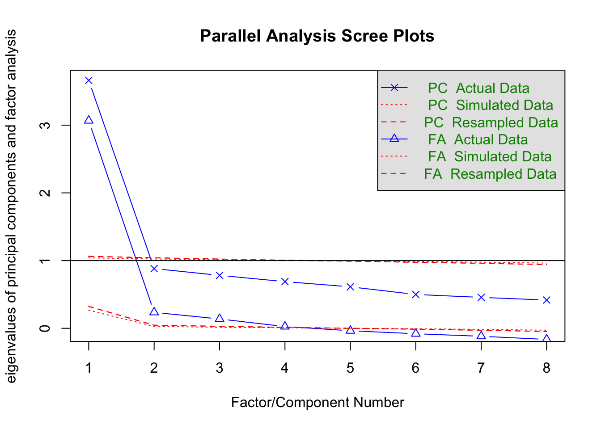
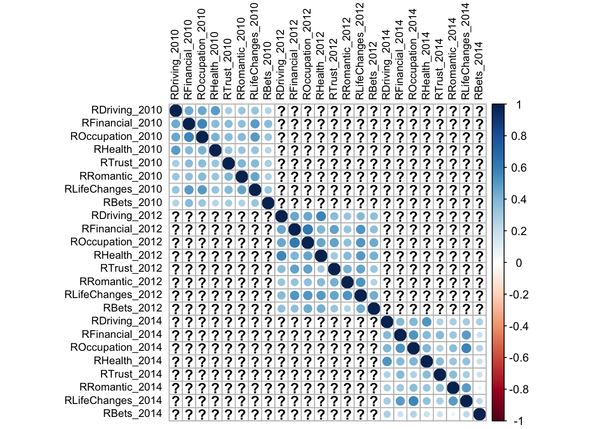
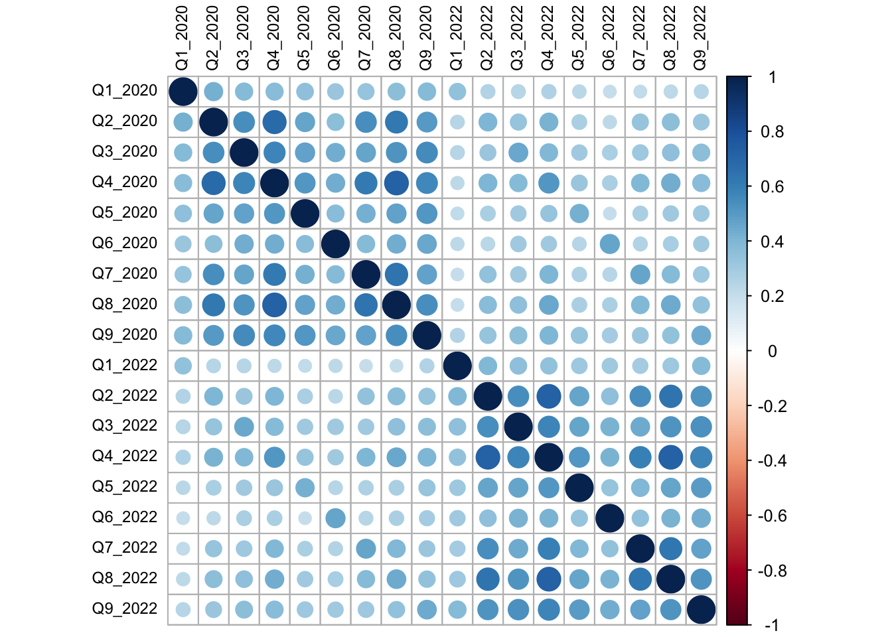
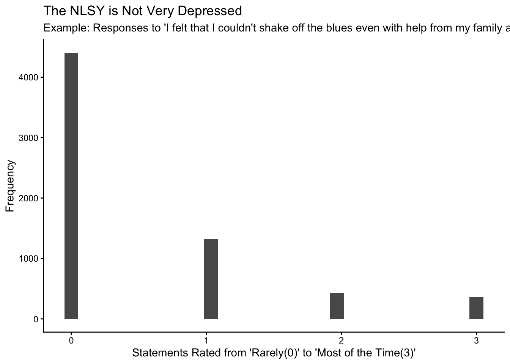
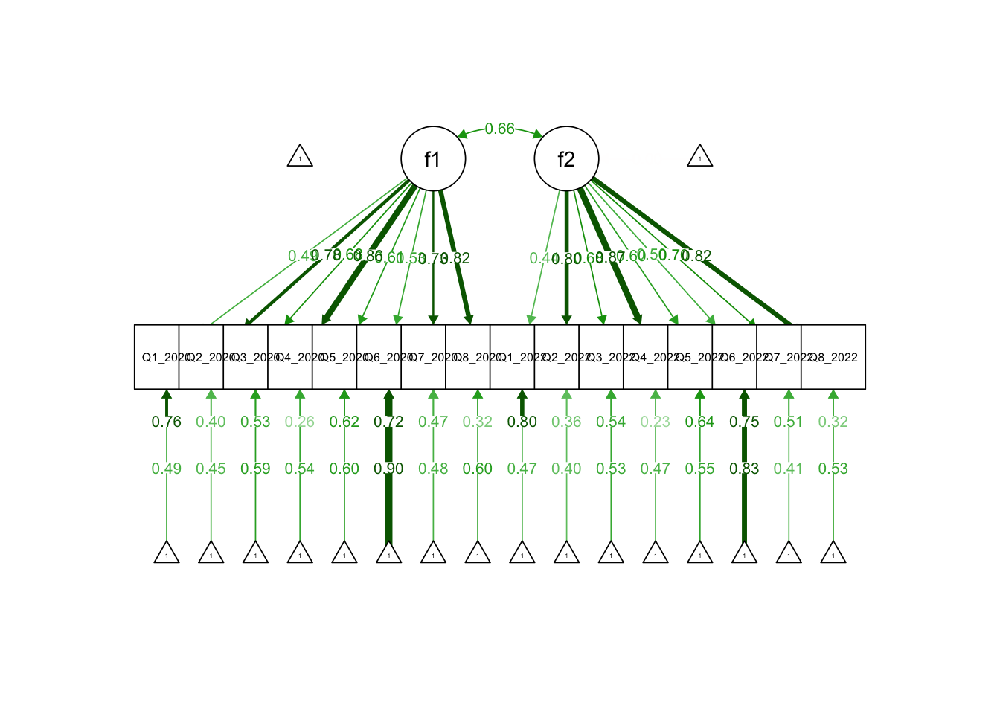

Factor analysis with my NLSY variables
I will be following this tutorial to learn how to do factor analysis in R: https://bookdown.org/sz_psyc490/r4psychometics/factor-analysis.html. This tutorial uses factanala() from the built in stats package. Later in this portfolio, I follow a tutorial that uses lavaan. If time allows, I will also try to figure it out with OpenMx.
I want to know about the factor structure of the kid and parent risk variables from the NLSY. I will also try out a longitudinal CFA on depression of the NLSY79 in 2020 and 2022.
EFA For the Child Risk Behavior Index.
I am first going to do an EFA with the child risk behavior index for 2010.
I use the factanal() function to see what the one-factor structure looks like. This function requires complete cases, so I used na.ommit, which yielded 428 observations.

The following table shows the items, variance unexplained by common factors (uniqueness), and their factor loadings (fl1).
| variable | uniqueness | fl1 |
|---|---|---|
| CRB1_2010 | 0.9322127 | 0.2603588 |
| CRB2_2010 | 0.8475028 | 0.3905085 |
| CRB3_2010 | 0.9715314 | 0.1687234 |
| CRB4_2010 | 0.3730465 | 0.7918040 |
| CRB5_2010 | 0.7216003 | 0.5276349 |
| CRB6_2010 | 0.5120041 | 0.6985672 |
These results suggest that the one factor structure isn’t amazing. Next, we see how a 2 factor structure looks. It doesn’t look any better.
| variable | uniqueness | fl1 | fl2 |
|---|---|---|---|
| CRB1_2010 | 0.8667609 | 0.1952270 | 0.3084365 |
| CRB2_2010 | 0.8351340 | 0.3543065 | 0.1983340 |
| CRB3_2010 | 0.6685911 | 0.0439324 | 0.5740059 |
| CRB4_2010 | 0.3713216 | 0.7798145 | 0.1434199 |
| CRB5_2010 | 0.7224030 | 0.5023954 | 0.1587326 |
| CRB6_2010 | 0.4986154 | 0.7027632 | 0.0866156 |
Since the parallel analysis suggested four factors, I tried to test that out, but it isn’t possible with 6 items.
For the sake of time, I am not going to get into the interpretation, and I am going to focus on learning + visualzing how to conduct these. Mike is currently covering EFA and CFA right now in class.
EFA for the NLSY79 General Risk Variables
There are 8 risk domains measured in the NLSY79 in 2010, 2012, and 2014. They are all measured on a 1-10 scale for behaviors such as financial, romantic, and health related risk-taking.
I selected the 8 items from 2010 and cleared out all incomplete observations. There were 6,988 observations remaining. First I checked out the scree plot and parallel analysis.


## Parallel analysis suggests that the number of factors = 4 and the number of components = 1Next I test the one factor structure:
| variable | uniqueness | fl1 |
|---|---|---|
| RDriving_2010 | 0.6330292 | 0.6057815 |
| RFinancial_2010 | 0.4761266 | 0.7237916 |
| ROccupation_2010 | 0.4551830 | 0.7381168 |
| RHealth_2010 | 0.6673840 | 0.5767285 |
| RTrust_2010 | 0.6941312 | 0.5530537 |
| RRomantic_2010 | 0.6737242 | 0.5712054 |
| RLifeChanges_2010 | 0.5489602 | 0.6715955 |
| RBets_2010 | 0.7735307 | 0.4758878 |
The two factor structure:
| variable | uniqueness | fl1 | fl2 |
|---|---|---|---|
| RDriving_2010 | 0.3899182 | 0.2502765 | 0.7398942 |
| RFinancial_2010 | 0.4893248 | 0.5936351 | 0.3978359 |
| ROccupation_2010 | 0.4716371 | 0.5894652 | 0.4253177 |
| RHealth_2010 | 0.5795787 | 0.3052926 | 0.5720302 |
| RTrust_2010 | 0.6837619 | 0.5076094 | 0.2420199 |
| RRomantic_2010 | 0.6483498 | 0.5434146 | 0.2373721 |
| RLifeChanges_2010 | 0.4662878 | 0.6983235 | 0.2146053 |
| RBets_2010 | 0.7671463 | 0.4367579 | 0.2051907 |
The one factor structure wins. report sig stuff These results provide some evidence that there is a latent risk-taking variable that influences many different domains of behavior.
CFA in Lavaan
I learned you can use the Lavaan package to do this with SEM, which is another way to get around the missingness issue, but it wants me to propose a structure, which I didn’t have before. I am using this tutorial to help me figure out how to apply it to my own variables: https://lavaan.ugent.be/tutorial/efa.html
Before doing SEM stuff though, I tried out the cfa function on the same parent risk taking variables from 2010. I know you are supposed to do the cfa on a different sample than the efa, but in this case it’s just practice, so I will go ahead and give it a whirl.
The cfa function just used the complete cases, so the sample ends up being the same as the na.omit route, but I don’t have to manually do the deletion, which I like.
## lavaan 0.6-21 ended normally after 1 iteration
##
## Estimator ML
## Optimization method NLMINB
## Number of model parameters 16
##
## Rotation method GEOMIN OBLIQUE
## Geomin epsilon 0.001
## Rotation algorithm (rstarts) GPA (30)
## Standardized metric TRUE
## Row weights None
##
## Used Total
## Number of observations 6988 12686
##
## Model Test User Model:
##
## Test statistic 1103.176
## Degrees of freedom 20
## P-value (Chi-square) 0.000
##
## Parameter Estimates:
##
## Standard errors Standard
## Information Expected
## Information saturated (h1) model Structured
##
## Latent Variables:
## Estimate Std.Err z-value P(>|z|) Std.lv Std.all
## f1 =~ efa
## RDriving_2010 1.788 0.035 51.763 0.000 1.788 0.606
## RFinancil_2010 1.985 0.031 65.029 0.000 1.985 0.724
## ROccupatn_2010 2.380 0.036 66.764 0.000 2.380 0.738
## RHealth_2010 1.651 0.034 48.754 0.000 1.651 0.577
## RTrust_2010 1.583 0.034 46.368 0.000 1.583 0.553
## RRomantic_2010 1.925 0.040 48.192 0.000 1.925 0.571
## RLifChngs_2010 1.960 0.033 58.943 0.000 1.960 0.672
## RBets_2010 1.536 0.039 38.952 0.000 1.536 0.476
##
## Variances:
## Estimate Std.Err z-value P(>|z|) Std.lv Std.all
## .RDriving_2010 5.515 0.105 52.713 0.000 5.515 0.633
## .RFinancil_2010 3.579 0.076 46.879 0.000 3.579 0.476
## .ROccupatn_2010 4.731 0.103 45.803 0.000 4.731 0.455
## .RHealth_2010 5.467 0.102 53.619 0.000 5.467 0.667
## .RTrust_2010 5.685 0.105 54.260 0.000 5.685 0.694
## .RRomantic_2010 7.653 0.142 53.775 0.000 7.653 0.674
## .RLifChngs_2010 4.678 0.094 50.005 0.000 4.678 0.549
## .RBets_2010 8.062 0.144 55.897 0.000 8.062 0.774
## f1 1.000 1.000 1.000Its also interesting to see that the factor loadings are strong (st.all I think) but the model fit is significant, which is no bueno in this context?
This is a one factor structure all right - which my scale is only 8 items so its not that surprising - not that many possible options. However, risk taking in romantic relationships versus driving versus gambling seem like they could be different. I am entertained by this.
Longitudinal CFA with the CESD
Turns out there is a thing called Longitudinal CFA, which asks: is the factor structure of the scale the same across time? This tutorial looks promising for learning how to do it, so that’s where I will start. Hope this is an ok strategy and not cheating:
https://quantdev.ssri.psu.edu/sites/qdev/files/LongitudinalMeasurementInvariance_2017_1108.html
There are three different years of general risk variables, and I am going to select these and make a new frame.

From this, I learned that there were no complete observations. This suggests that perhaps most people were asked in 2010, and if they didn’t answer in 2010, they were asked in 2012 or 2014.
I will pivot to NLSY79 depression variables (CESD items) which have better coverage.


Now that I have found some longitudinal data that checks out, I can start modeling. Starting with a Configural Invariance Model - I gather this is looking at: do we have the same factor structure for each group (or in this case, the group is the year). Is the 2020 factor structure reasonably similar to the 2022 factor structure?
## lavaan 0.6-21 ended normally after 64 iterations
##
## Estimator ML
## Optimization method NLMINB
## Number of model parameters 51
## Number of equality constraints 1
##
## Used Total
## Number of observations 6931 12686
## Number of missing patterns 41
##
## Model Test User Model:
##
## Test statistic 4637.129
## Degrees of freedom 102
## P-value (Chi-square) 0.000
##
## Model Test Baseline Model:
##
## Test statistic 51621.391
## Degrees of freedom 120
## P-value 0.000
##
## User Model versus Baseline Model:
##
## Comparative Fit Index (CFI) 0.912
## Tucker-Lewis Index (TLI) 0.896
##
## Robust Comparative Fit Index (CFI) 0.908
## Robust Tucker-Lewis Index (TLI) 0.891
##
## Loglikelihood and Information Criteria:
##
## Loglikelihood user model (H0) -104924.341
## Loglikelihood unrestricted model (H1) -102605.776
##
## Akaike (AIC) 209948.682
## Bayesian (BIC) 210290.869
## Sample-size adjusted Bayesian (SABIC) 210131.981
##
## Root Mean Square Error of Approximation:
##
## RMSEA 0.080
## 90 Percent confidence interval - lower 0.078
## 90 Percent confidence interval - upper 0.082
## P-value H_0: RMSEA <= 0.050 0.000
## P-value H_0: RMSEA >= 0.080 0.534
##
## Robust RMSEA 0.086
## 90 Percent confidence interval - lower 0.084
## 90 Percent confidence interval - upper 0.088
## P-value H_0: Robust RMSEA <= 0.050 0.000
## P-value H_0: Robust RMSEA >= 0.080 1.000
##
## Standardized Root Mean Square Residual:
##
## SRMR 0.048
##
## Parameter Estimates:
##
## Standard errors Standard
## Information Observed
## Observed information based on Hessian
##
## Latent Variables:
## Estimate Std.Err z-value P(>|z|) Std.lv Std.all
## f1 =~
## Q1_2020 (lmb1) 0.351 0.009 40.123 0.000 0.351 0.488
## Q2_2020 0.545 0.008 72.373 0.000 0.545 0.777
## Q3_2020 0.578 0.010 60.466 0.000 0.578 0.683
## Q4_2020 0.720 0.008 85.194 0.000 0.720 0.863
## Q5_2020 0.615 0.012 52.679 0.000 0.615 0.614
## Q6_2020 0.585 0.013 44.454 0.000 0.585 0.532
## Q7_2020 0.601 0.009 65.947 0.000 0.601 0.727
## Q8_2020 0.715 0.009 78.950 0.000 0.715 0.823
## f2 =~
## Q1_2022 (lmb1) 0.351 0.009 40.123 0.000 0.306 0.443
## Q2_2022 0.628 0.024 26.441 0.000 0.548 0.802
## Q3_2022 0.659 0.026 25.562 0.000 0.576 0.680
## Q4_2022 0.795 0.030 26.716 0.000 0.694 0.875
## Q5_2022 0.670 0.027 24.658 0.000 0.585 0.596
## Q6_2022 0.641 0.027 23.322 0.000 0.559 0.502
## Q7_2022 0.607 0.024 25.657 0.000 0.530 0.701
## Q8_2022 0.788 0.030 26.453 0.000 0.688 0.823
##
## Covariances:
## Estimate Std.Err z-value P(>|z|) Std.lv Std.all
## f1 ~~
## f2 0.572 0.022 25.503 0.000 0.655 0.655
##
## Intercepts:
## Estimate Std.Err z-value P(>|z|) Std.lv Std.all
## .Q1_2020 (i1) 0.354 0.009 39.817 0.000 0.354 0.492
## .Q2_2020 0.315 0.009 36.541 0.000 0.315 0.449
## .Q3_2020 0.503 0.010 48.207 0.000 0.503 0.594
## .Q4_2020 0.447 0.010 43.694 0.000 0.447 0.536
## .Q5_2020 0.605 0.012 49.012 0.000 0.605 0.605
## .Q6_2020 0.991 0.014 73.075 0.000 0.991 0.902
## .Q7_2020 0.396 0.010 38.951 0.000 0.396 0.479
## .Q8_2020 0.525 0.011 49.227 0.000 0.525 0.605
## .Q1_2022 (i2) 0.327 0.008 42.656 0.000 0.327 0.473
## .Q2_2022 0.276 0.005 52.336 0.000 0.276 0.404
## .Q3_2022 0.447 0.007 60.092 0.000 0.447 0.528
## .Q4_2022 0.372 0.005 71.928 0.000 0.372 0.468
## .Q5_2022 0.536 0.009 58.240 0.000 0.536 0.546
## .Q6_2022 0.930 0.011 83.177 0.000 0.930 0.834
## .Q7_2022 0.311 0.007 46.981 0.000 0.311 0.411
## .Q8_2022 0.446 0.006 74.966 0.000 0.446 0.534
## f1 0.000 0.000 0.000
## f2 -0.002 0.009 -0.206 0.837 -0.002 -0.002
##
## Variances:
## Estimate Std.Err z-value P(>|z|) Std.lv Std.all
## .Q1_2020 0.394 0.007 55.287 0.000 0.394 0.762
## .Q2_2020 0.195 0.004 48.474 0.000 0.195 0.396
## .Q3_2020 0.383 0.007 52.061 0.000 0.383 0.534
## .Q4_2020 0.178 0.004 40.749 0.000 0.178 0.255
## .Q5_2020 0.623 0.012 53.593 0.000 0.623 0.622
## .Q6_2020 0.865 0.016 54.863 0.000 0.865 0.717
## .Q7_2020 0.321 0.006 50.744 0.000 0.321 0.471
## .Q8_2020 0.244 0.005 45.274 0.000 0.244 0.323
## .Q1_2022 0.385 0.007 55.194 0.000 0.385 0.804
## .Q2_2022 0.167 0.004 46.778 0.000 0.167 0.357
## .Q3_2022 0.384 0.007 51.791 0.000 0.384 0.537
## .Q4_2022 0.148 0.004 38.855 0.000 0.148 0.235
## .Q5_2022 0.621 0.012 53.515 0.000 0.621 0.644
## .Q6_2022 0.929 0.017 54.698 0.000 0.929 0.748
## .Q7_2022 0.291 0.006 51.206 0.000 0.291 0.509
## .Q8_2022 0.226 0.005 45.077 0.000 0.226 0.323
## f1 1.000 1.000 1.000
## f2 0.763 0.056 13.603 0.000 1.000 1.000It ran! I don’t know what it did, so now I need to figure out what it means / accomplishes in this first step.
Finally, I tried out a new plotting technique, semPaths.

The correlation between the latent variable depression at time 1 and time 2 is .66, and they appear to have the same factor structure. This makes sense because the CESD is a really good measure of depression, and time 1 and time 2 are only two years apart.